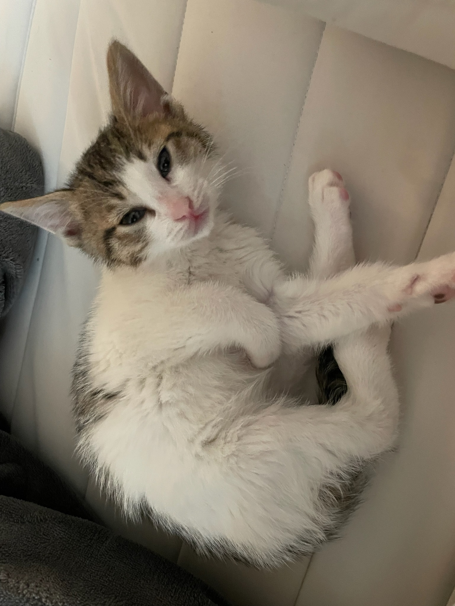
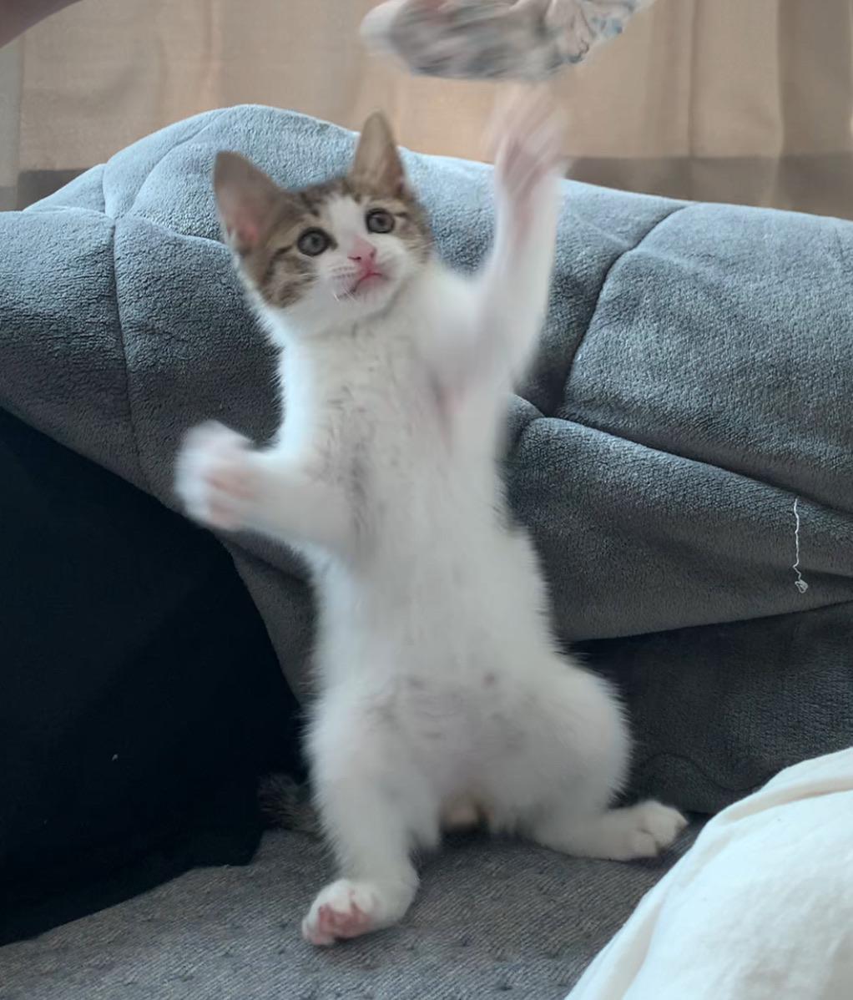
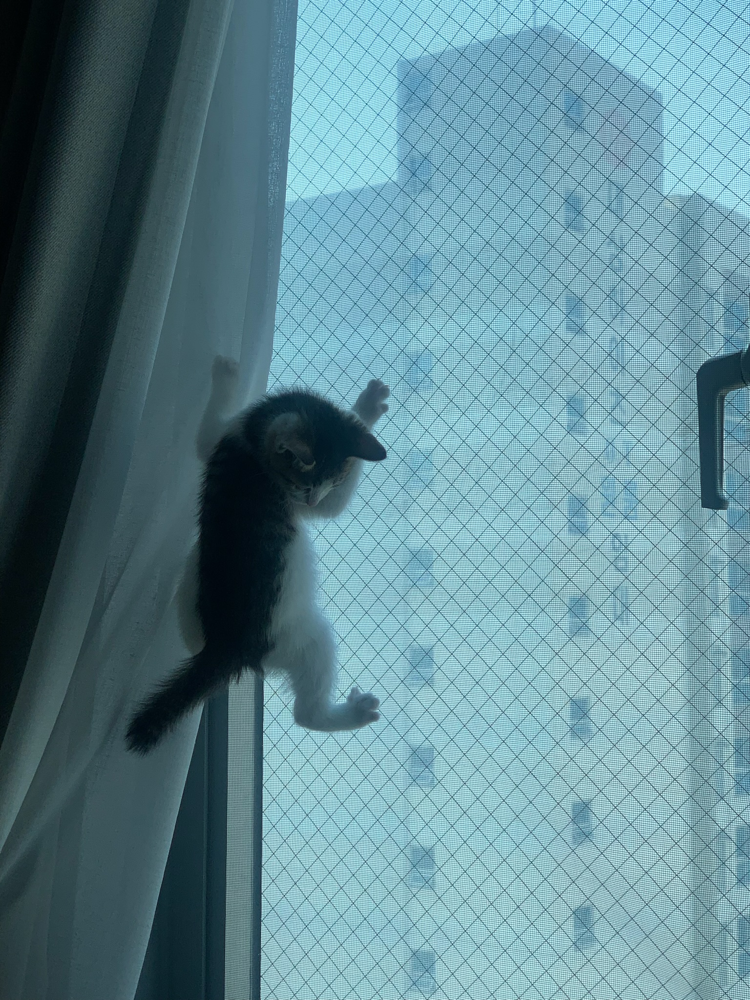
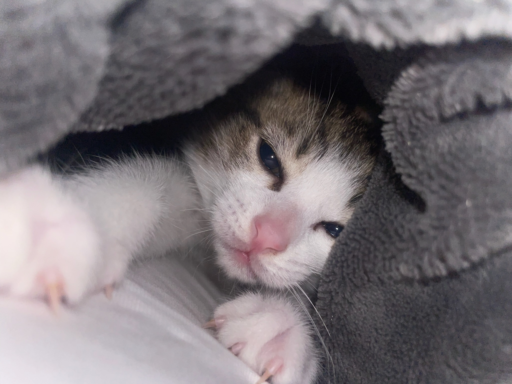
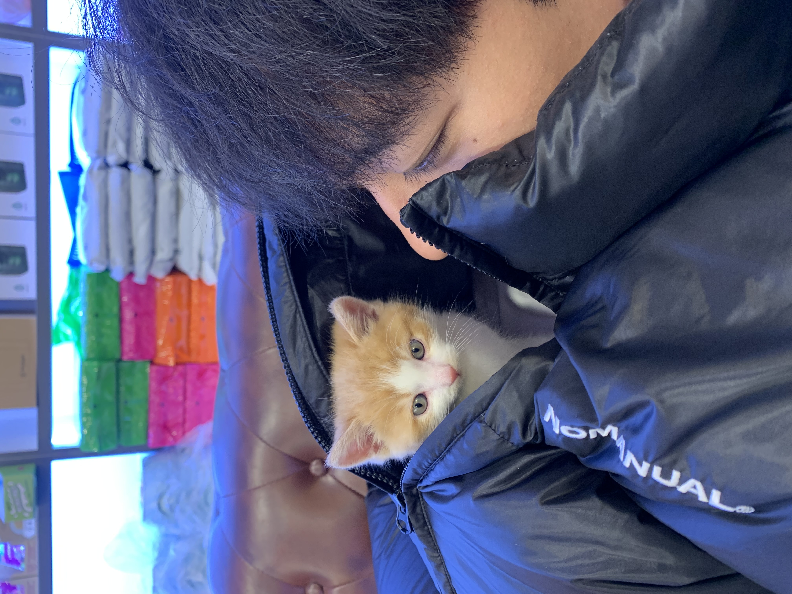
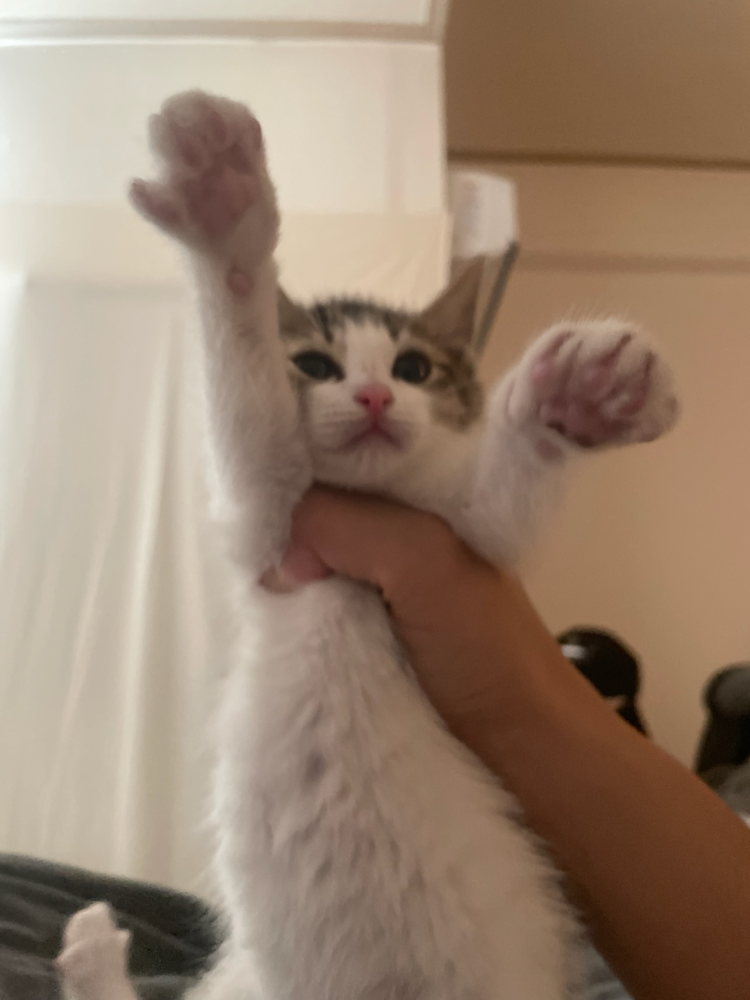
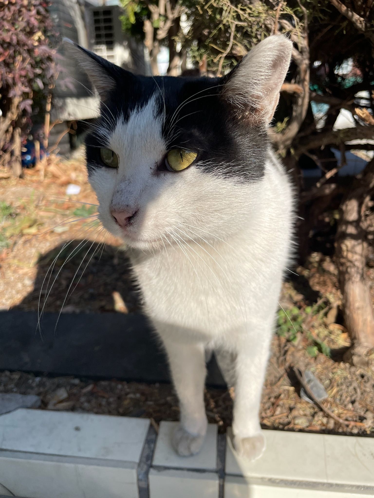
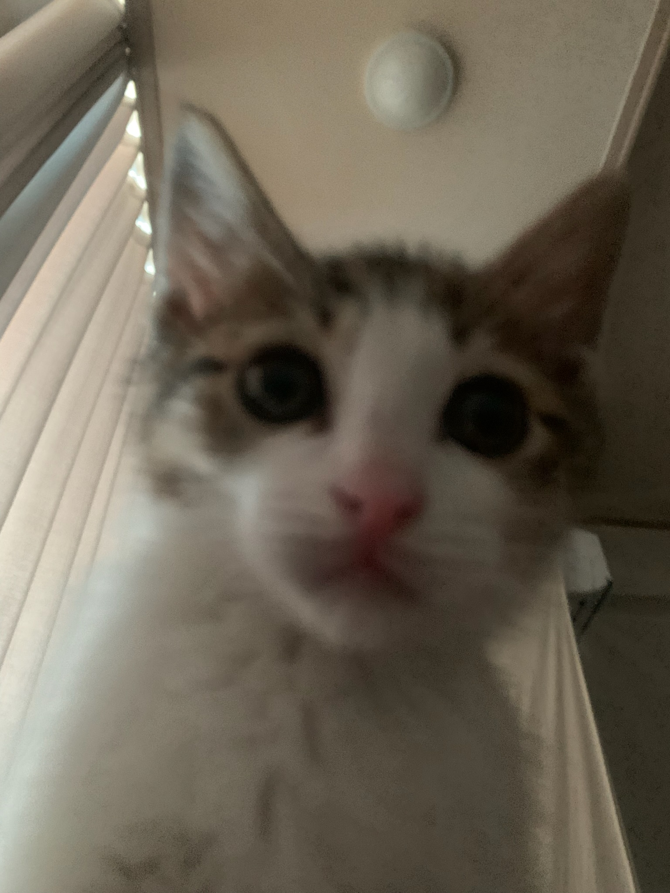
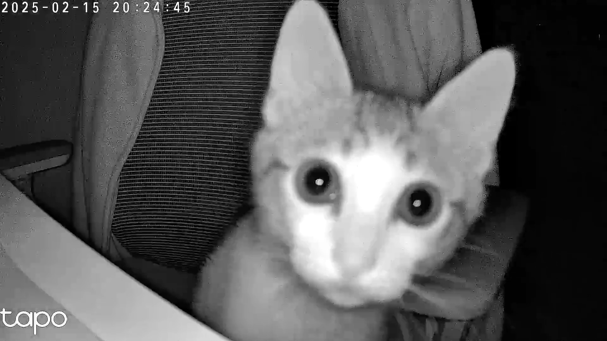
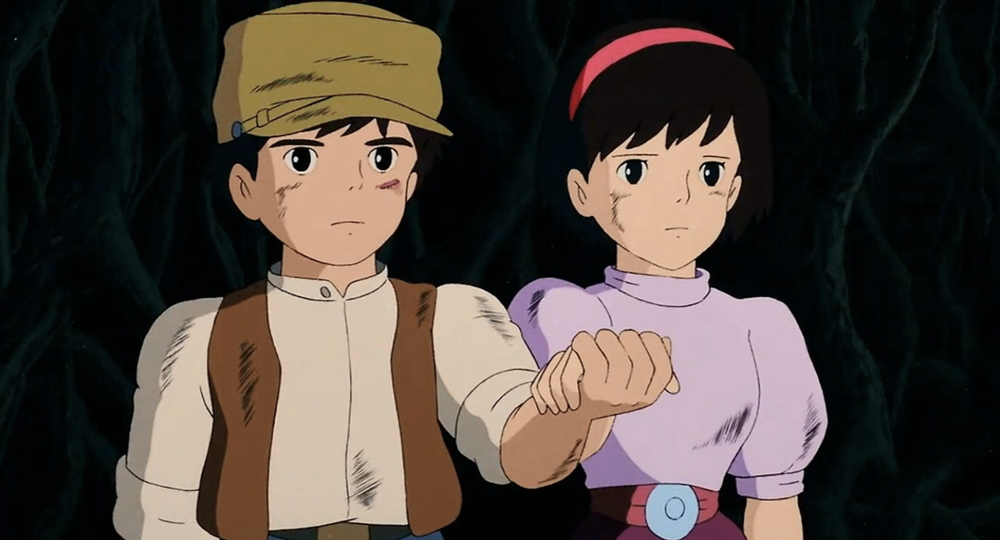

호떡
자기소개
안녕하세요, 호떡이예요
호떡을 좋아하냐구요? 네 좋아합니다
그치만 닉네임을 호떡이라 지을 만큼 좋아하지는 않구요
밑에 있는 고양이가 제가 키웠던 고양이 호떡이입니다 🐈
아 가운데에 다른 고양이도 보이신다구요?
사실 저 친구가 호떡이 입니다 ㅎㅎ
나머지 고등어냥이는 지금 키우는(서울오기 전에 키웠던..) 사바입니다 😸
어어 잠시만요 중간에 좀 큰애도 한마리 보이신다구요?
관찰력이 뛰어나시군요 ! 저랑 친했던 길냥이 뽀시래기입니다 🙀
😼😻🙀😹
나를 울린 인생 작품
인생 노래

Coldplay - Everglow 🎧✨
고등학교랑 대학 신입생 때 자주 들었던 노래예요.
그때 힘든 시기가 있었지만, 멜로디랑 크리스 마틴의 목소리가 큰 위로가 되었어요.
당시에는 가사의 의미도 모르고 그냥 좋다고 생각했는데,
나중에 보니 "사람이 떠나도 남아 있는 따뜻한 감정"을 담은 곡이더라고요.
그래서인지 들을 때마다 깊은 여운이 남았어요.
한동안 듣지 않다가 오랜만에 다시 들었는데, 여전히 좋네요.
시간이 지나도 변하지 않는 그런 음악 같아요. 🎶🔥
인생 영화

지브리의 「천공의 성 라퓨타」라는 애니메이션 영화예요. 🎥✨
이 영화가 특별히 다른 작품들보다 엄청나게 재미있거나, 작품성이 뛰어나서 인생 영화인 건 아니에요.
어릴 때부터 정말 수도 없이 많이 봤고, 그만큼 모든 장면과 주인공들에게 정이 들어서 그런 것 같아요.
지금까지 본 횟수만 넉넉잡아 100번은 될 것 같아요.
그런데도 여전히 재미있고, 스토리도 탄탄하며, 기승전결이 완벽하고 울림까지 있는 영화예요.
얼마나 많이 봤냐 하면, 찰나의 사운드만 들어도 어떤 장면인지 알 수 있을 정도입니다… 🎶🎞️
여러분들도 한 번 보길 바라요!
바루스!
-
 방문자
대학생 때 읽었던 모모가 문득 생각나서 다시 펼쳐봤는데, 글쓴이님 말씀처럼 정말 지금 보니까 완전 다르게 다가오더라구요! 회색 신사들이 들려주는 '시간 절약'이란 말이 마치 요즘 유튜브에서 흔히 보이는 '갓생 살기' 영상들 같아서 씁쓸하게 웃었습니다 ㅎㅎ 광안리 해변 이야기는 정말 이 글의 하이라이트인 것 같아요. 저도 이제는 가끔은 멍때리는 시간을 가져야겠어요 :)
방문자
대학생 때 읽었던 모모가 문득 생각나서 다시 펼쳐봤는데, 글쓴이님 말씀처럼 정말 지금 보니까 완전 다르게 다가오더라구요! 회색 신사들이 들려주는 '시간 절약'이란 말이 마치 요즘 유튜브에서 흔히 보이는 '갓생 살기' 영상들 같아서 씁쓸하게 웃었습니다 ㅎㅎ 광안리 해변 이야기는 정말 이 글의 하이라이트인 것 같아요. 저도 이제는 가끔은 멍때리는 시간을 가져야겠어요 :) -
방문자
와... 크론이라는 닉네임의 의미를 읽고 푸지 이발사가 딱 떠올랐어요. 저도 회사에서 30분 단위로 시간 쪼개서 일정 관리하다가 얼마 전에 번아웃 왔거든요 😅 시간을 아낀다고 오히려 삶을 놓치고 있었던 것 같아서 마음이 찡했습니다. 글쓴이님 글 덕분에 오늘은 퇴근하고 동네 한 바퀴 돌아야겠어요~
-
방문자
이 글 읽으면서 계속 고개를 끄덕였네요 👍 특히 자기계발서 이야기... 저도 요즘 '갓생살기' 영상 보면서 조급해졌었는데, 모모 다시 읽어봐야겠어요! 시간은 아끼는 게 아니라 느끼는 거라는 말에 완전 공감입니다. 저도 이제는 하루에 한 번은 커피 마시면서 창밖 구경하기로 했어요 ☕️